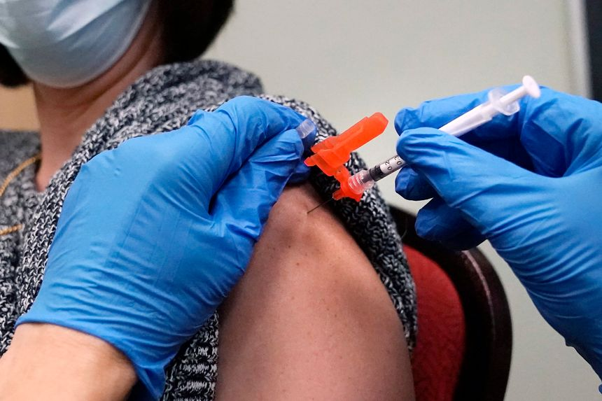

| 时间 | 分类 | 标题 | 副标题 | 正文 | 图片 |
|---|---|---|---|---|---|
| 2022-01-23 18:56:00 | Deals | Activist Investor to Call on Peloton to Fire Its CEO | Blackwells Capital to push stationary-bike maker to explore a sale, sources say | An activist investor wants Peloton Interactive Inc. to fire its chief executive and explore a sale after the stationary-bike maker’s stock plummeted more than 80% from its high, as growth slowed. Blackwells Capital LLC has a significant stake of less than 5% in Peloton and is preparing to push the company’s board to fire CEO John Foley and pursue a sale, according to people familiar with the matter. The firm believes Peloton could be an attractive acquisition target for larger technology or fitness-oriented companies, the people said. |
 |
| 2022-01-23 17:16:00 | Opinion | The Alzheimer’s Death Panel | The real reason Medicare won’t pay for a promising treatment. | President Biden says he wants to increase healthcare access. But this is hard to square with the Centers for Medicare and Medicaid Services’ unprecedented proposal this month to restrict Medicare payment for a class of novel Alzheimer’s treatments. The CMS recommendation follows the controversy over Food and Drug Administration approval last summer of Biogen ’s Alzheimer’s treatment Aduhelm. The monoclonal antibody clears amyloid plaque in the brain, a hallmark of the disease. It is the first treatment shown in clinical trials to slow Alzheimer’s progression. |
|
| 2022-01-23 17:14:00 | Opinion | Youngkin Trades ‘Equity’ for ‘Opportunity’ | Virginia’s new Governor sends an important political message. | New Gov. Glenn Youngkin is off to a fast start in Virginia, pushing back as his campaign promised against the coercion of progressive mandates and control of schools. One of his early moves seems especially notable and promising: Recasting the state’s “diversity, equity and inclusion” office to substitute “opportunity” for “equity.” At a general level this change is largely symbolic because what matters is how the office will operate in practice. But the symbolism still matters because it represents a major fault line in American culture and politics. |
|
| 2022-01-23 17:13:00 | Opinion | Build Back Better? Fix Medicaid First | As Biden dreams big, Medicaid’s ‘improper’ payment rate is 22%. | While Democrats are dreaming up ways to enlarge the welfare state, here’s a bracing statistic about America’s existing safety net: “The national improper payment rate for Medicaid is nearly 22 percent.” That quote is taken from a report this week by the Foundation for Government Accountability (FGA), and it gets worse from there. That national figure is for 2021, and most of it, about 80%, is due to eligibility errors. To fill in the picture, the FGA sent records requests to individual states, whose errors are sampled on a rotating cycle. The group’s report cites figures for about a dozen. Top of the list was Ohio, with a bad payment rate of 44.3%. Illinois, a usual suspect, came in at 37.3%. Missouri was 31.7% and North Dakota 28.3%. Those are 2019 figures, the latest available for each state. |
|
| 2022-01-23 17:12:00 | Opinion | Censuring Senator Sinema | Arizona’s Democratic Party can’t abide her principled filibuster vote. | If there’s any remaining doubt that killing the Senate legislative filibuster is now Democratic Party orthodoxy, it vanished over the weekend when the executive board of the state party in Arizona voted to censure Sen. Kyrsten Sinema. Her offense was taking a position in favor of the filibuster—which was Democratic Senate orthodoxy as recently as two years ago. “While we take no pleasure in this announcement, the ADP Executive Board has decided to formally censure Senator Sinema as a result of her failure to do whatever it takes to ensure the health of our democracy,” Arizona Democratic Party Chair Raquel Terán said in a statement. News reports say the vote was unanimous. |
|
| 2022-01-23 17:00:00 | Opinion | Is Germany a Reliable American Ally? Nein | Berlin goes its own way, prizing cheap gas, car exports to China, and keeping Putin calm. | As Vladimir Putin’s invasion of Ukraine looms, most Western allies are acting to support Kyiv and reassure vulnerable members of the North Atlantic Treaty Organization. Germany is taking a different approach, putting Russian interests before those of the West. Berlin reveals a serious reality: Facing the two most consequential security threats to America and to the post-World War II democratic international order—China and Russia—Germany is no longer a credible ally. For Germany, cheap gas, car exports to China and keeping Mr. Putin calm seem to be more important than allied democratic solidarity. Ukraine’s fate will convey on Germany a heavy burden of responsibility. |
|
| 2022-01-23 16:59:00 | Opinion | Big Labor’s Resurgence That Wasn’t | Union membership in the private sector fell to 6.1%, a historic low. | The Economist predicts “2022 will be the year of the worker.” Interest in organizing is “infectiously spreading from workplace to workplace,” the New Republic claims, concluding: “America is in the midst of a dramatic labor resurgence.” New data from the Bureau of Labor Statistics throw cold water on these predictions. The annual BLS report on union membership released last week shows that unions lost nearly a quarter-million members in 2021, with private-sector membership dropping to a historic low of 6.1%. Even in retail and healthcare, which labor organizers targeted over pandemic-related safety concerns, union membership declined in 2021 from 2020. |
|
| 2022-01-23 16:58:00 | Opinion | 90% of Everything Is . . . Take a Guess | Venture capitalist Marc Andreessen explains the world with Sturgeon’s law. | It used to be that 90% of the time, you accessed stuff only on your computer’s local network. Then in 1993 at the University of Illinois, Marc Andreessen developed Mosaic, the first internet browser, which allowed users to wander around the World Wide Web 90% of the time. He moved to Silicon Valley and founded Netscape. Mr. Andreessen is now a general partner at a top-decile venture-capital firm, better than 90% of its peers. Andreessen Horowitz recently raised $9 billion in new funds. Last week I spent some time sitting on Mr. Andreessen’s back porch pondering the magic of 90% and how it created Silicon Valley and continues to rule it. “In venture capital, you think a lot about so-called adverse selection,” Mr. Andreessen says. “ ‘Why am I so lucky as to be the person you’re trying to raise money from?’ You want to get to positive selection, the best people coming to you.” |
|
| 2022-01-23 16:57:00 | Opinion | Why Won’t Joe Biden Take On Cuba? | The president talks of troubles in the region but never mentions the heart of darkness. | During his press conference last week President Biden was asked to comment on U.S. foreign policy in the Western Hemisphere. He riffed on Central America, said he’d spent “a lot of time talking about” Venezuelan dictator Nicolás Maduro, and incoherently referenced Chile and Argentina. He went on to express concern about the shrinking number of democracies in the world. Yet strangely the president never mentioned the region’s heart of darkness, the 63-year-old military dictatorship in Havana. |
|
| 2022-01-23 16:55:00 | Books & Arts | ‘Davos Man’ Review: Globe-Trotting Do-Gooders | The World Economic Forum’s über-wealthy, self-important attendees are easy to dislike. But are they really the source of all evil? | In 1971 a German economist named Klaus Schwab convened the first meeting of what would become the World Economic Forum in Davos, Switzerland. Mr. Schwab wanted business executives, government officials and nonprofit leaders to discuss his idea of “stakeholder capitalism”: the concept that corporate managers have a duty to pursue the interests not only of shareholders, but of stakeholders. What’s a stakeholder? Basically, it’s any individual or group allegedly affected by the company’s decisions. The idea caught on. Fifty years later, around 3,000 billionaires and millionaires, heads of state, rock stars, and hangers-on flock to the annual gathering. (The 2021 Forum was held remotely, and this year’s meeting has been delayed until spring.) The language of stakeholder capitalism permeates politics and economics. Mr. Schwab did more than build an institution. He created a social type: the globe-trotting, well-connected, extremely wealthy do-gooder whom the late political scientist Samuel P. Huntington called “Davos Man.” |
|
| 2022-01-23 16:54:00 | Opinion | Hospitals Shouldn’t Get to Choose Their Competition | A South Carolina legal fight highlights the damage done to patients by certificate-of-need laws. | Somebody call an eye doctor. Two of South Carolina’s largest hospital systems have gone to war over allegations of unfair trade practices, and neither side can see the hypocrisy. A lawsuit brought by the Medical University of South Carolina accuses Trident Medical Center and its affiliate company, Tennessee-based HCA Healthcare , of “wholesale poaching” and “conspiracy.” Specifically, MUSC says Trident raided its head-and-neck cancer treatment unit in 2021 and lured away several top doctors. |
|
| 2022-01-23 15:00:00 | Pro PE Deals | Software Provider Globalization Partners Gets Vista Equity Backing at $4.2 Billion Valuation | Company helps businesses outsource tasks associated with hiring people abroad, and has seen massive growth due to the Covid-19 pandemic | Globalization Partners, a software provider that helps businesses streamline the process of hiring employees internationally, has landed new backing from Vista Equity Partners that values the company at $4.2 billion. Boston-based Globalization Partners helps businesses outsource tasks associated with hiring people abroad, including tax, legal, accounting and administrative duties, through artificial intelligence-powered software. The company said it experienced a boom in business due partly to the movement of global workforces throughout the Covid-19 pandemic. |
|
| 2022-01-23 15:00:00 | Economy | Economy Week Ahead: Fed, GDP, Consumer Spending | The Federal Reserve is likely to strengthen expectations of rate increases this year | The Federal Reserve’s policy meeting highlights a full week of economic news. Surveys of purchasing managers in Japan, Europe and the U.S. will be closely watched for fallout from the Omicron wave of Covid-19 in the opening weeks of January. The indicators, some of the first big data points for the month, should offer insight on whether efforts to contain the variant as well its impact on worker health are affecting demand, supply chains and prices—all key gauges during the pandemic. |
|
| 2022-01-23 14:07:00 | Politics | Protesters March in Washington Against Covid-19 Vaccine Mandates | Studies show that vaccines and boosters offer superior protection from recent variants of the coronavirus | Protesters rallied in the nation’s capital Sunday against government mandates for Covid-19 vaccinations, a sign of the challenges for public-health officials looking for ways to persuade more Americans to get the shots. Protesters marched along the National Mall and gathered in front of the Lincoln Memorial, despite cold temperatures Sunday morning. |
|
| 2022-01-23 13:52:00 | Business | Kohl’s Can’t Find Relief From Investor Pressure | In a letter, Engine Capital urges department-store chain to run sale process following Starboard Value bid, as activists remain unsatisfied with pace of turnaround | Since taking the helm of Kohl’s Corp. in May 2018, Chief Executive Michelle Gass has forged partnerships with Amazon.com Inc. and Sephora, brought in new brands and beefed up its loyalty program. Yet, the retailer’s stock is worth less today than it was two decades ago. On Friday, a group backed by activist hedge fund Starboard Value LP offered roughly $9 billion to buy the department store chain, The Wall Street Journal reported, following a renewed push by a different activist to shake up its board and consider a sale. |
|
| 2022-01-23 13:04:00 | Opinion | Janet Yellen Joins Democrats in Peddling Sour Grapes | They ignore Martin Luther King’s advice: ‘Accept finite disappointment, but never lose infinite hope.’ | Treasury Secretary Janet Yellen made a stunning remark while celebrating Martin Luther King Jr. Day. Correctly noting that King “knew that economic injustice was bound up in the larger injustice he fought against,” she claimed: “From Reconstruction, to Jim Crow, to the present day, our economy has never worked fairly for black Americans—or, really, for any American of color.” Saying America’s economy has “never” worked fairly for “any American of color” defines those Americans merely by one particular statistical community to which they belong. The claim refuses to treat them as individuals, eviscerating any personal story of success, of defying odds, of building a better life. Such sweeping pessimism also lacks historical context and a broader perspective comparing the American standard of living with the rest of the world’s. |
|
| 2022-01-23 13:04:00 | Opinion | Exercise Is Good for You, Even if You Have a Mild Case of Covid | The seven- to 10-day rest recommendation appears to be as arbitrary as the 6-foot social distancing one. | To exercise with Covid or not—that’s the question some fitness buffs are asking. The American College of Sports Medicine has suggested people under 50 who experience mild or no symptoms to rest for at least seven to 10 days after testing positive. Their recommendation appears to be motivated by the concern that even a mild Covid-19 infection may damage the heart and potentially cause sudden death during physical exertion. There’s little evidence to support this recommendation. Because exercise boosts the immune system, it may even help people bounce back faster from Covid. |
|
| 2022-01-23 12:53:00 | Business | Activist Investor Nelson Peltz Buys Stake in Unilever | Move by Trian Fund adds pressure on Unilever CEO after his failed bid to buy GlaxoSmithKline’s consumer health business | LONDON—Trian Fund Management LP, the activist hedge fund run by Nelson Peltz, has acquired a stake in Unilever PLC, according to people familiar with the matter, adding pressure to the packaged food and consumer goods giant in the wake of its failed $68-billion bid for GlaxoSmithKline PLC’s consumer-health business. The size of the stake couldn’t be learned. Trian started buying Unilever shares well before its bids for the GSK unit surfaced earlier this month, one of the people said. |
|
| 2022-01-23 12:48:00 | World | U.S.-Backed Forces Struggle to Contain Islamic State in Battle Over Syrian Prison | Militant group carried out one of its most complex operations in years, sparking a sustained fight | Syrian fighters backed by American airstrikes struggled to retake control of a prison attacked by Islamic State in northeastern Syria on Sunday, as the militant group’s attempt to replenish its ranks with freed prisoners sparked the area’s worst sustained fighting in years. The prison attack, which began last week, was one of the most complex and brazen Islamic State operations in Syria and Iraq in the past three years. It involved sleeper cells, suicide bombers and an insurrection inside the prison, said the Syrian Democratic Forces, the U.S.-backed, Kurdish-led militia that controls a section of northeastern Syria that is autonomous from the regime in Damascus. |
|
| 2022-01-23 11:42:00 | Opinion | How Do You Solve a Problem Like the U.S. Postal Service? | Some would have the USPS wither away. Others want bureaucratic expansion. | Kevin Kosar’s review of “First Class” by Christopher Shaw (Bookshelf, Jan. 14) makes good suggestions on how to reduce costs at the post office. But he doesn’t mention the elephant in the room: pensions. My grandmother worked for the U.S. Postal Service for 18 years and retired as Post Master in 1979, at the age of 65. When she retired she was making $12,000 a year. She died a couple of years ago at the age of 105, collecting a pension for 40 years. Because the Postal Service gives annual cost-of-living adjustments to its retirees, her pension went up every year. Her pension was more than $50,000 a year when she died. |
|
| 2022-01-23 11:41:00 | Opinion | Who Knew I Was Friends With Bull Connor? | President Biden, apparently. Or so it seems from his Georgia speech. | Regarding your editorial about President Biden’s Georgia speech (“Are You With Biden, or Jefferson Davis?” Jan. 12): John and I have been friends for more than 40 years. We were college roommates. Later, we got together to play golf a few times a year, took occasional hikes and walks—and we talked. More accurately, we disagreed and argued about almost every social and political issue of the day. Then we had lunch, played a round of golf or visited each other’s family. Now, apparently, it’s time to end that 40-year friendship. Who knew that John favors autocracy over democracy? He never let on. Who knew he was Jefferson Davis, Bull Connor and Jim Crow, all rolled into one? I never noticed. Perhaps I can replace John with a new friend—one who thinks exactly like me. |
|
| 2022-01-23 11:37:00 | Opinion | Dairy Quotas Would Help Our Family Farms | Canada’s supply-management system provides a positive example. | A recent ruling under the U.S.-Mexico-Canada Agreement fails to address the problems confronting dairy farmers in any meaningful way (“U.S. Wins Ruling on Canada Dairy Tariffs,” U.S. News, Jan. 5). On the contrary, it dismisses the positive example of Canada’s dairy supply-management program, which has stabilized the supply of milk, provided protective subsidies to small farmers, ensured most of the dairy production is consumed domestically and offered fairer prices to farmers and consumers. Canada’s quota system has enabled dairy farmers to invest in more sustainable, climate-friendly farming practices. Their average dairy herd size is 97 cows, allowing more opportunities for pasture grazing and soil carbon sequestration. This combination of minimal emissions and maximum soil carbon retention constitutes one of the most positive versions of dairy production. |
|
| 2022-01-23 10:24:00 | A-hed | Your Hotel Concierge Is Probably a Texting Robot. Srsly. | The hospitality industry is shifting to texts and automated responses to communicate with guests; ‘not something I’d pick up the phone for’ | Your next hotel’s concierge might not be in the same time zone as your room. Or sentient. Larger chains and smaller inns are moving past the custom of having guests press “0” on a landline phone to ask for that extra towel. Instead, properties have turned to text messages. That means requests could get answered by someone in another state, a bot or a digital spider monkey. |
|
| 2022-01-23 10:04:00 | Business | Foreign Executives in Isolated Hong Kong Head for Exit, Sick of Zero-Covid Curbs | Flight bans, quarantine stays for arrivals and school closures jeopardize the city’s status as a business hub | HONG KONG—Stringent rules to try to keep Hong Kong free of Covid-19 are driving away more foreign executives, chipping away at the city’s decades-old status as one of the world’s top business hubs. Flight bans, lengthy quarantine stays for arrivals and repeated school closures are pushing more people to a breaking point as the pandemic enters its third year and the city clings to a zero-Covid strategy abandoned by nearly all countries save for China. A growing outbreak at a public housing estate has prompted the government to lock down buildings and send more people into quarantine. |
|
| 2022-01-23 10:00:00 | CFO Journal | Companies’ U.S. Pension Plans Are More Overfunded Than They Have Been in Years | Further increases in 2022 could spur CFOs to revise their pension strategies | ||
| 2022-01-23 10:00:00 | Politics | Republicans Focus on Effects, Not Causes, of Climate Change | GOP governors confront rising sea levels and wildfires: ‘We’re not doing any left-wing stuff,’ Florida’s Ron DeSantis says | MIAMI—Florida Gov. Ron DeSantis visited the coastal city of Oldsmar recently to unveil projects including sea walls and drainage systems intended to address flooding. The state is seeing rising sea levels, and Florida’s environmental and economic successes are intertwined, Mr. DeSantis and other speakers said. The Republican governor, unlike many of his Democratic counterparts, didn’t use the term “climate change” or endorse specific policies aimed at combating factors that most climate scientists say are driving warming, such as greenhouse-gas emissions. He focused on responding to the effects of a warming climate. |
|
| 2022-01-23 10:00:00 | Life & Work | Why Tiny Movements Can Get You Back Into Shape | Going to the office or stopping at the store can have surprising health benefits. Here’s why doctors are prescribing simple movement to improve fitness. | If you want to get in better shape but can’t stand the idea of kettlebells and push-ups, just move. Americans’ widespread retreat to their homes in the past two years has made us more sedentary and less healthy, doctors say. We tend to think intense, vigorous workouts will whip us back into shape, but doctors suggest starting smaller. Simple movement, like standing, walking, balancing, stretching—even fidgeting—can improve your fitness and is critical for overall health, they say. And we’re not doing enough of it now. |
|
| 2022-01-23 09:46:00 | Health | Omicron Pressure Eases in Some U.S. States, but Infections Remain High | Seven-day average of total people in U.S. hospitals with Covid-19 variant declined for a second consecutive day | Pressure has begun to ease on U.S. hospitals hit by the Omicron variant of the coronavirus, while some European governments took steps to reopen activities that were closed during the worst of the wave. The seven-day average of total people in U.S. hospitals declined for the second consecutive day, reaching 158,788 on Saturday, according to data from the Department of Health and Human Services. The number of new admissions to hospitals across the U.S. was also down. |
|
| 2022-01-23 09:00:00 | Business | Train Robberies Are a Problem in Los Angeles, and a Blame Game Has Ensued | Union Pacific and law enforcement blame each other for heists involving thousands of packages | Michelle Wilde bought a piece of sand art during a visit to Jerome, Ariz., earlier this month. Rather than carry it home, she had the shopkeeper ship the $145 frame to her. Instead of arriving at her home in Everett, Wash., the package ended up next to a railroad track in East Los Angeles. The frame was gone. The box remained. |
|
| 2022-01-23 09:00:00 | Economy | Inflation Poses Risks of Faster, Less Predictable Fed Rate Increases | Promises or clues about rate plans are growing harder to deliver | The Federal Reserve is entering an unfamiliar environment at the start of 2022. For the first time in decades, officials are preparing to raise interest rates when inflation is uncomfortably high rather than very low. The last time the Fed lifted rates from near zero, at the end of 2015, inflation was running below its 2% target and the unemployment rate—a measure of labor slack—was declining gently. |
|
| 2022-01-23 08:00:00 | Markets | Rising Interest Rates Hit Municipal-Bonds Market | Investors expect climbing rates to fuel more volatility in the year ahead | Municipal bonds are off to their worst start since 2011. The early-year bond rout has dragged returns on the S&P Municipal Bond Index to minus 1.1% through Jan. 20, counting price changes and interest payments. The loss is an early sign that rising interest rates could make 2022 rockier than last year, when federal stimulus and elevated demand from homebound savers led to record low volatility and historically high prices. |
|
| 2022-01-23 08:00:00 | Politics | Wisconsin’s Field of Democratic Senate Hopefuls Is Lining Up on Left of Biden | Progressives are jockeying to take on Republican Sen. Ron Johnson in November in one of the most closely watched midterm contests | The current top tier of Democrats campaigning for U.S. Senate in Wisconsin includes a lieutenant governor, a state treasurer, a county executive and a former Goldman Sachs analyst who is a billionaire’s son. None could be described as centrists. In a state decided by less than 1 percentage point in the 2020 presidential election—the third-narrowest outcome nationally—six Democrats who have raised the most money so far are all taking positions to the left of President Biden’s. |
|
| 2022-01-23 07:03:00 | Markets | Tech Rout Fueled by Bond-Market Turn | Rising yields, particularly on inflation-protected Treasurys, are often viewed as close indicators of borrowing costs for businesses and consumers | Shifts within the bond market are removing a key pillar of support for Wall Street’s more speculative bets, dragging down major stock indexes as investors flee everything from tech stocks to cryptocurrencies. Spooked in large part by rising bond yields, investors continued to dump stocks last week, extending early-year losses that have taken many off guard with their speed and severity. Once again, tech shares were at the forefront. Selling also broadened to include sectors such as banking and energy, sending the S&P 500 to its worst stretch of declines since the onset of the Covid-19 pandemic. |
|
| 2022-01-23 07:00:00 | Business | Winter Olympics Sponsors Caught Between Beijing, U.S. | Visa, P&G and Coca-Cola are keeping a relatively low profile as Washington highlights human rights in Xinjiang | With less than two weeks to go before the start of the Winter Games in Beijing, several Olympics sponsors are skipping what is usually an Olympics-themed advertising blitz. In 2018, Visa Inc. revved up its Olympic marketing campaign months before the Winter Olympics in Pyeongchang, South Korea. It marked the 100-day countdown to the torch lighting on Twitter. It highlighted its Team Visa athletes, and it promoted wearable payment devices used at the event. |
|
| 2022-01-23 06:51:00 | World | Saudis Reopen Elementary Schools After One of the World’s Longest Covid Shutdowns | Long period of distance learning has frustrated parents in a kingdom where dissent isn’t tolerated | JEDDAH, Saudi Arabia—Millions of Saudi children began returning to elementary school and kindergarten classrooms Sunday for the first time in nearly two years, a period of remote learning that was among the world’s longest and that angered parents. For some Saudis and foreign workers, the return to the classroom was a relief. Parents said their children faced learning difficulties and emotional setbacks during distance learning, and they grew frustrated as they watched neighboring countries ease restrictions on classroom learning last year. |
 |
| 2022-01-23 05:39:00 | World | Omicron Cases Put New Zealand on Red Alert, Leader Ardern Cancels Wedding | Government to limit sizes of gatherings as authorities warn variant is circulating in country’s biggest city | SYDNEY—New Zealand will move to the highest level of its Covid-19 restrictions as it seeks to contain an Omicron-variant outbreak that also led Prime Minister Jacinda Ardern to cancel her wedding plans. Ms. Ardern said on Sunday that nine Covid-19 cases in the Nelson Marlborough region, on the country’s South Island, had been confirmed as Omicron. The nine cases are from a single family that flew earlier this month to Auckland—New Zealand’s largest city, located on the North Island—to attend a wedding and other events. A further case from the same household has also been confirmed. |
|
| 2022-01-23 05:36:00 | Markets | Why the Sustainable Investment Craze Is Flawed | The first in a series of Streetwise columns about the failed promise of funds guided by environmental, social and governance principles, known as ESG | The financial industry has spotted an opportunity to make money by helping people feel good about themselves. Despite claims to the contrary, these investments don’t do much to make the world a better place. ESG funds, as they are known, promise to invest in companies with better environmental, social and governance attributes, to save the planet, improve worker conditions or, in the case of the U.S. Vegan Climate ETF, prevent animals from being eaten. |
|
| 2022-01-23 05:30:00 | Health | Omicron Wave Drives Surge of Workers Calling In Sick, Working Through Illness | Almost 8.8 million Americans were out sick or caring for someone with Covid-19 in early January | The Omicron wave of coronavirus cases is weighing on the U.S. labor force, keeping millions of people home sick while others say they are working through illnesses. This double impact from the biggest surge of Covid-19 illnesses so far in the pandemic comes as employers have struggled with an unusually tight labor market and an unemployment rate that is approaching pre-pandemic levels. Job openings have hovered at their highest-ever levels for months. Workers have quit at a record rate. Fewer people are in the workforce than before the pandemic began. Meanwhile, those who are working are getting bigger than usual pay increases amid the highest inflation in four decades. |
|
| 2022-01-23 05:30:00 | Business | From Plants to Store Shelves, U.S. Food Supply Is Under Pressure | Weeks of workers calling in sick add to continuing supply and transportation disruptions, making store shelves harder to fill | The U.S. food system is under renewed strain as Covid-19’s Omicron variant stretches workforces from processing plants to grocery stores, leaving gaps on supermarket shelves. In Arizona, one in 10 processing plant and distribution workers at a major produce company were recently out sick. In Massachusetts, employee illnesses have slowed the flow of fish to supermarkets and restaurants. A grocery chain in the U.S. Southeast had to hire temporary workers after roughly one-third of employees at its distribution centers fell ill. |
|
| 2022-01-23 05:30:00 | Tech | How to Avoid Unwanted Photos on Social Media | If you spot an unwanted photo of you on your News Feed, there are things you can do | Thanks to smartphones, everyone has a camera in their pocket. With people documenting everything from gatherings to their beauty routines, nearly every social occasion—even ones that should stay private—tends to end up online. Eventually, your image is bound to show up in some posts you don’t like. Before you stress, consider your options: You can untag yourself, ask the person to delete the photo or video, or report the post if it breaks the platform’s rules. In extreme cases, you may have grounds for a lawsuit. |
|
| 2022-01-22 18:24:00 | World | Head of German Navy Resigns After Saying Russia Would Never Return Crimea | Comments sparked diplomatic row, with Kyiv accusing Berlin of lack of support in standoff with Moscow | BERLIN—The head of the German navy resigned on Saturday after saying that Russia would never surrender Crimea to Ukraine and that President Vladimir Putin only wanted respect, in comments that caused a diplomatic row between Berlin and Kyiv. Vice Adm. Kay-Achim Schönbach said in a statement released by the navy that he had requested the defense minister relieve him with immediate effect of his duty after his “thoughtless comments about security and defense policy.” |
|
| 2022-01-22 17:30:00 | World | Russia Hatching Plot to Replace Ukraine Government, U.K. Says | Allegations come in the midst of warnings that Russia could invade with the around 100,000 troops gathered near border | The U.K. said it has exposed a plot by Russia to install a friendly government in Ukraine, supporting an earlier U.S. assessment suggesting that the Kremlin is laying plans to oust its neighbor’s leadership. The allegations, announced Saturday by the British Foreign Office, come in the midst of warnings that Russia could invade Ukraine with the around 100,000 troops it has gathered near the border. |
|
| 2022-01-22 16:42:00 | Markets | Empty Private Jet Flights Hastened Credit Suisse Chairman António Horta-Osório’s Downfall | A bank review of the chairman’s travel found it was paying for planes to return empty after dropping him off in London and Lisbon | After relocating to Zurich last spring to run Credit Suisse Group AG as chairman, António Horta-Osório flew to London and Lisbon for work meetings and business events, then spent time with his family at homes there. On multiple occasions, a private plane paid for by Credit Suisse dropped him off on a Thursday and returned empty to Switzerland, according to people familiar with the travel. By Monday, a plane picked Mr. Horta-Osório up for work in Zurich. |
|
| 2022-01-22 12:00:00 | Tech | The Nanotechnology Revolution Is Here—We Just Haven’t Noticed Yet | For years, engineers have made microchips ever smaller and more powerful. Now they’re applying the technology to a host of miniature marvels. | Before there was a “metaverse,” before there were crypto millionaires, before nearly every kid in America wanted to be an influencer, the most-hyped thing in tech was “nanotechnology.” “Nano-,” for those who could use a refresher, means “one billionth,” and nanotechnology generally refers to materials manipulated at an atomic or molecular scale. For decades, computer scientists and physicists speculated that, any minute now, nanotechnology was going to completely reshape our lives, unleashing a wave of humanity-saving inventions. Things haven’t unfolded as they predicted but, quietly, the nanotech revolution is under way. |
|
| 2022-01-22 11:00:00 | Business | Green M&M’s Fashion Makeover Is Covid Comfy but Not Everyone Is Happy | Critics of change prefer previous sexy look; Mars says ditching heels gives cartoon character a modern appearance | The green M&M has a new look. Not everyone is impressed. The problem? The once-sexy cartoon candy seems to have been stripped of her mojo, some say. |
 |
| 2022-01-22 10:00:00 | Markets | Wells Fargo Is Up, JPMorgan Is Down: Bank Stocks Are Diverging in 2022 | Rising costs dim prospects for some banks, but not all | After three weeks of trading in the new year, the big bank stocks are all over the place. Wells Fargo & Co. shares fell in the past week along with the broader market, but they’re still up 12% for the year. The bank is well positioned to benefit from rising U.S. interest rates, given its large base of U.S. deposits and loans. Analysts at KBW, who rate the stock outperform, recently raised its price target to $67, citing stronger-than-expected growth in net interest income. Wells Fargo closed Friday at $53.67. |
|
| 2022-01-22 09:00:00 | Tech | Moms in Middle Age: Rarely Alone, Often Online and Increasingly Lonely | Social media has both helped and hurt Gen X mothers dealing with burnout and loneliness during the pandemic | Middle age is a crowded time. It’s also a lonely one. Work and family demands leave little time for nurturing friendships, particularly for women. Pre-pandemic, conversations about loneliness often centered on men, with talk of a “loneliness epidemic.” But during lockdown, Generation X women, who range in age from 41 to 57 years old, reported the sharpest rise in loneliness, according to a survey of more than 1,000 adults conducted in the spring of 2020 by the Roots of Loneliness Project, a research organization. And the increase in social isolation reported by women living with children was also greatest among those from Gen X, according to an unpublished portion of the survey shared with The Wall Street Journal. |
|
| 2022-01-22 09:00:00 | Real Estate | To Bargain With Their Landlords, Renters Form Tenant Unions | Housing groups take a page from the labor movement in push for building improvements, eviction delays | Apartment tenants are forming unions in an effort to gain leverage in landlord negotiations, a response to record-high rents and the recent expiration of eviction bans enacted during the Covid-19 pandemic. Tenant unions, also known as associations, have been around for more than a century. They have been especially active in expensive cities with large renter populations such as San Francisco and New York. Now they are spreading in places like Akron, Ohio; Milwaukee, and the Maryland suburbs. |
|
| 2022-01-22 08:31:00 | U.S. | New York Police Officer Killed in Harlem Shooting; Second Officer Seriously Wounded | With four officers shot in the city in as many days, Mayor Adams calls for federal authorities to do more to round up stolen guns | A New York City police officer was killed and another critically wounded Friday night while answering a call about an argument between a woman and her adult son, officials said, making four officers shot in the city in as many days. Just three weeks into their jobs, Mayor Eric Adams—a former police captain himself—and Police Commissioner Keechant Sewell stood before the media at a Harlem hospital, denouncing the spate of violence against the New York Police Department. |
|
| 2022-01-22 08:00:00 | Business | Cruise Lines Betting on Summer Rebound Face Obstacles From Omicron | Carnival and Royal Caribbean adjust to destinations’ changing health protocols as industry looks to recover from pandemic-related losses | The cruise industry’s bet on a big summer rebound is looking less certain. Travel agents and industry executives say that while the season—which begins in April and runs to October—still looks strong, bookings have slowed since late last year. Some cruise lines have canceled or pushed back sailings as a result of the Omicron variant. |
|
| 2022-01-22 08:00:00 | Life & Work | Yeti’s Billion-Dollar Strategy: No Celebrities, No Pandering | Although the Texas purveyor of high-end coolers and drinkware has attracted fans like Kim Kardashian and Matt Damon, its marketing is still geared to the serious outdoors types who inspired it | Yeti—the Texas maker of rugged coolers and drinkware—has transcended its outdoorsy roots to become a pop culture juggernaut and an accidental status symbol. When brothers Roy and Ryan Seiders set out to create a superior cooler for their hunting and fishing adventures in 2006, they could not have anticipated that their products would be carried and posted to social media by A-list celebrities like Matt Damon, Reese Witherspoon and Kim Kardashian, given shoutouts in songs like Chris Janson’s “Buy Me A Boat” (148 million views on YouTube since 2015) or become the unofficial mascot of tailgate parties and beach hangs everywhere. Its trendy logo hats are worn by fashion types and sorority members alike. On social media, Yeti obsessives display massive collections of products, and share photos of their “YOTD” (Yeti of the day). But while most brands embrace influencer culture, Yeti is not taking the bait. |
|
| 2022-01-22 07:00:00 | Books & Arts | ‘The 7th Hand’ by Saxophonist Immanuel Wilkins Review: At Home in the Jazz Club or the Revival Tent | The new album by the 24-year-old saxophonist draws heavily on Southern religious tradition. | ||
| 2022-01-22 07:00:00 | Books & Arts | ‘Joseph E. Yoakum: What I Saw’ Review: Valedictory Work From a Self-Taught Artist | The Museum of Modern art highlights the Chicago-based African-American creator of rhythmic, obsessive drawings of fantastic landscapes. | New York |
|
| 2022-01-22 05:30:00 | Business | Apple, Microsoft and Tesla Headline Key Earnings Week Amid Nasdaq’s Slide | About a fifth of the S&P 500 and nearly half the Dow Jones Industrial Average are set to provide their quarterly updates starting Monday | Tech giants including Microsoft Corp. , Apple Inc. and Tesla Inc. are among the companies headlining a busy earnings week that comes as investors look for reassurance after the Nasdaq notched a 12% decline to start the year. Overall, about a fifth of the S&P 500 and nearly half of the Dow Jones Industrial Average are expected to provide their quarterly updates during the week starting Monday, according to FactSet. |
|
| 2022-01-22 05:30:00 | Health | As Covid-19 Pills Roll Out, Worry Mounts That Resistance Could Develop | Researchers watch for signs the virus is morphing to evade new drugs, and study combining antivirals to stay a step ahead | Researchers and U.S. health regulators worry Covid-19 will figure out a way to evade important new pills, prompting efforts to look for signs of such resistance and find combinations to thwart it. The treatments—Paxlovid from Pfizer Inc. and molnupiravir from Merck & Co. and Ridgeback Biotherapeutics LP—are the first drugs authorized by federal health regulators that people early in the course of an infection can easily take at home to avoid severe disease. |
|
| 2022-01-22 05:30:00 | World | F-16 Sale Could Mend U.S., Turkey Ties, but Tension With Russia Intrudes | Members of Congress who object to Erdogan’s relationship with Putin resist Ankara’s potential jet-fighter purchase | The Biden administration is weighing a Turkish proposal to buy a fleet of F-16 jet fighters that officials in Ankara say would mend ruptured security links between the countries, but the sale faces opposition from members of Congress critical of Turkey’s growing ties to Russia. Senior Turkish officials say the deal could be a lifeline for their relationship with the U.S., which has suffered for years over Turkey’s purchases of Russian arms, clashing interests in the war in Syria and U.S. criticism of Ankara’s human-rights record. And in both countries, analysts say blocking the sale could push Ankara closer to Russia. |
|
| 2022-01-22 05:30:00 | Politics | Tax Season 2022 Is Here, and Pandemic-Related Complications Remain | IRS backlogs and accounting for child-tax-credit payments are among the difficulties awaiting taxpayers ahead of the mid-April deadline | WASHINGTON—It’s that time again. Tax-filing season is here, and the pandemic and its aftereffects are still causing complications. Here’s a guide to what you should expect as you prepare and file your returns. The Internal Revenue Service will begin accepting 2021 individual income-tax returns on Jan. 24. Most taxpayers get refunds. Early filers tend to be lower-income households whose primary earnings come from their jobs. They are often trying to get that refund quickly and aren’t waiting on information from partnerships and investments, which are of greater importance to the wealthier investors who tend to file later. |
|
| 2022-01-22 05:30:00 | Markets | How Bad Are Things in China’s Property Market? | Government curbs on borrowing in China’s property sector have triggered uncertainty for many market participants | Government curbs on borrowing in China’s property sector have helped set off a spiral of falling home sales, surging corporate bond yields and waning confidence among investors and prospective home buyers. While the past few days have brought a modest improvement in sentiment, the giant China Evergrande Group and several smaller peers have already fallen into default and casualties could continue to mount. Here’s where the market stands as 2022 gets under way. |
|
| 2022-01-21 21:21:00 | Markets | Kohl’s Gets $9 Billion Bid From Starboard Value Group | The department store has been under pressure to boost its share price | A consortium backed by activist hedge fund Starboard Value LP has offered roughly $9 billion to buy department store Kohl’s Corp. , according to people familiar with the matter. A group led by Acacia Research Corp., which Starboard controls, offered to buy the department-store chain for $64 a share in cash Friday, the people said. It told the company it has received assurances from bankers that it would be able to get financing for the bid, the people said. |
|
| 2022-01-21 21:06:00 | World | Two Canadian Tourists Killed, Another Wounded at Mexican Resort Hotel | Authorities say both victims had criminal records in Canada | MEXICO CITY—Two Canadian tourists were killed and another wounded Friday by an armed assailant at a five-star hotel on Mexico’s Caribbean strip, local authorities said. The shooting occurred midafternoon at the Hotel Xcaret Mexico in Playa del Carmen, some 40 miles south of Cancún. |
|
| 2022-01-21 20:54:00 | World | Thich Nhat Hanh, Influential Zen Buddhist Monk, Dies at Age 95 | He helped pioneer the concept of mindfulness in the West and socially engaged Buddhism in the East | HANOI, Vietnam—Thich Nhat Hanh, the revered Zen Buddhist monk who helped pioneer the concept of mindfulness in the West and socially engaged Buddhism in the East, has died. He was 95. A post on the monk’s verified Twitter page attributed to the International Plum Village Community of Engaged Buddhism said that Thich Nhat Hanh, known as Thay to his followers, died at Tu Hieu Temple in Hue, Vietnam. |
|
| 2022-01-21 19:25:00 | Markets | Activision Blizzard, American Airlines, Netflix: Stocks That Defined the Week | Here are seven major companies whose stocks moved on the week’s news | Activision Blizzard Inc. Microsoft ’s decision to buy Activision Blizzard powered up videogame stocks. After Tuesday’s announcement of Microsoft Inc.’s $75 billion acquisition of Activision Blizzard Inc., shares of Electronic Arts Inc., Ubisoft Entertainment SA and Nintendo Co. jumped on the prospect of more deals as investors place bets on the rapidly consolidating industry. Deal-making among videogame companies has surged in recent years as gaming has become more popular on mobile devices. Activision soared 26% Tuesday. |
|
| 2022-01-21 19:08:00 | Books & Arts | Celebrating James Joyce’s Modern Vision, ‘Ulysses’ at 100 | The novel, marking its centenary, forever changed the literary landscape | One hundred years ago, on Feb. 2, 1922, James Joyce’s 40th birthday, the half-blind author published “Ulysses,” the greatest and most innovative modern novel. The action takes place in Dublin, his native city, hour by hour, locale by locale, on a single day, June 16, 1904. The hero, Leopold Bloom, is an Irish-Jewish, middle-class advertising salesman, married to a Catholic professional singer, daughter of a soldier and born in Gibraltar. He is psychologically incapacitated by the death of his infant son, Rudy, and irrationally fears having another child who might also die. He no longer has sexual relations with his gorgeous, sensual wife, Molly, and restrains himself by sleeping head-to-toe in bed with her. |
|
| 2022-01-21 18:56:00 | Opinion | What the Senate Filibuster Assault Means | Wednesday’s narrow vote changed Senate races, starting in 2022. | Washington wisdom once held that while Sens. Joe Manchin and Kyrsten Sinema were the public faces of Democratic reluctance to breaking the Senate filibuster, others in the caucus quietly supported the duo. But on Wednesday night, 48 out of 50 Senate Democrats voted to use the “nuclear option” in an attempt to overturn election laws in most states. That means the partisan abolition of the Senate’s 60-vote requirement for most legislation is no longer an abstraction. It’s an institutional Democratic Party position—a trigger that Majority Leader Chuck Schumer has committed to pull as soon as he has 50 votes and a co-partisan as Vice President. Democrats may have failed to ram their legislation through this week, but they have changed the nature of the U.S. Senate merely by trying to make it a majoritarian body for the first time. The fallout should start in this year’s midterms in competitive states. |
|
| 2022-01-21 18:47:00 | Opinion | Biden’s Pointless Vaccine Mandate | After another defeat in court, it’s time to end this unpopular coercion. | The Biden Administration said Friday it will appeal a federal judge’s injunction against its vaccine mandate for federal employees. But why bother? The White House says 98% of federal workers have complied. Increasingly the Biden mandates seem more about punishing than protecting people. President Biden would seem to have stronger legal grounds for a mandate on federal workers than on private ones. The Administration argued that civil-service laws give the President carte blanche authority over the federal workforce, especially when to protect the public. |
 |
| 2022-01-21 18:43:00 | Opinion | America’s Ever-Expanding Criminal Code | The number of federal crimes has increased 36% since the 1990s. | How many federal crimes has Congress created? The question seems like it ought to have a straightforward answer that citizens can look up. In fact it’s more like asking, “how many genes are in the human genome?” The answer is in the many thousands, but despite decades of counting, no one knows for sure. A new project by the Heritage Foundation and George Mason University’s Mercatus Center says it is “the first effort to ‘count the Code’ since 2008.” The researchers created an algorithm with key phrases like “shall be punished” and “shall be fined or imprisoned” to search tens of thousands of pages in the U.S. Code. |
|
| 2022-01-21 18:42:00 | Judge Rules Banks Must Stand Trial Over $7 Billion R. Allen Stanford Fraud Claims | Judge finds services of major banks may have helped fraudster R. Allen Stanford | Toronto-Dominion Bank, HSBC Bank PLC and other banks linked to convicted fraudster R. Allen Stanford must stand trial over claims they supported his $7 billion Ponzi scheme and should repay defrauded investors, a federal judge ruled. Judge David Godbey of the U.S. District Court in Dallas on Thursday denied a request by the banks to avoid trial in a lawsuit brought on behalf of investors bilked by Mr. Stanford, citing evidence the banks knew his operation wasn’t on the level but still did business with him. The... |
||
| 2022-01-21 18:39:00 | Opinion | The Supreme Court’s McGirt Cleanup | Native American victims deserve to have crimes against them prosecuted. | The Supreme Court made a mess in Oklahoma two years ago, but the good news is the Justices might now be moving to help clean it up. On Friday they agreed to hear an appeal that could refill some of the prosecutorial vacuum left by McGirt, the High Court’s gravely misguided 2020 ruling. The new case, Oklahoma v. Victor Manuel Castro-Huerta, involves a man convicted of child neglect. His disabled 5-year-old stepdaughter weighed 19 pounds when she was rushed to the ER, “covered in lice and excrement,” the state’s brief says. Her crib was found “filled with bedbugs and cockroaches and contained a single, dry sippy cup, the top of which was chewed through.” |
|
| 2022-01-21 18:14:00 | Opinion | Eternity and the Grateful Dead | A video of their 1981 concert in Essen, Germany, sent me thinking about the life after this one. | One morning under an ominous sky, my friend Michael texted me a video of the Grateful Dead performing “Looks Like Rain.” He was right as, well, rain. Shortly afterward, the heavens opened and a deluge fell. Sending an unsolicited musical and meteorological warning is a kindness Deadheads the world over routinely show one another. After grabbing my umbrella, I listened to the show and had to agree. The March 28, 1981, Rockpalast Festival performance of the song at Grugahalle in Essen, Germany, is tough to beat. |
|
| 2022-01-21 18:13:00 | Opinion | Google’s ‘Inclusive Language’ Police | The company labels terms like ‘senior citizen,’ ‘dummy variable,’ and ‘black box’ verboten. | The physicist Richard Feynman once told a story about his father taking him out in the woods to observe nature. Feynman saw a bird and asked what it was called. His father said the name was irrelevant—it was only important to see how a bird behaved if you wanted to learn about it. I have a hard time remembering names, which is one of the reasons I became a physicist and not a physician, as my mother wanted. Maybe this is why I have a hard time understanding how people can be so hurt by the use of some words and names. But Google and the other organizations that are creating the programming of the future and the apps that will govern our daily lives have decided some words are so dangerous that we need to excise them, not only from daily speech, but also from computer code. |
|
| 2022-01-21 18:10:00 | Opinion | AT&T and the Netflix Streaming Crack-Up | Ma Bell is missing the boat on bundling as it insists on unwinding the Warner Media deal. | Still liking AT&T ’s plan to spin off its giant Warner Media acquisition especially in view of Netflix ’s big selloff Friday? The press was over the moon about the pending dismemberment when it was announced eight months ago. It involved big dollars and a big climb-down by Ma Bell’s management, which had recently fought the Justice Department to put the two together. But if you’ve been waiting for a sign from the stock market that the separation would actually be value creating, you’re still waiting. AT&T and the nominal acquirer, Discovery Communications (of which AT&T shareholders will end up owning 70%) have exhibited largely flat stock prices since the still-dragging deal was announced last year. |
|
| 2022-01-21 18:08:00 | Opinion | How Minnesota Went From Tom Sawyer to Huck Finn | Fifty years ago it was ‘the state that works.’ Now it’s become a microcosm of an America in crisis. | I wrote an August 1973 cover story for Time magazine that praised Minnesota as “the state that works.” The cover photograph showed Gov. Wendell Anderson, dressed in a plaid flannel shirt, grinning and holding up a northern pike that he had just caught in one of Minnesota’s 12,000 lakes. The story began with this archaic rhapsody: “It is a state where a residual American secret still seems to operate. Some of the nation’s more agreeable qualities are evident there: courtesy and fairness, honesty, a capacity for innovation, hard work, intellectual adventure and responsibility. . . . Minnesotans are remarkably civil; their crime rate is the third lowest in the nation (after Iowa and Maine).” |
|
| 2022-01-21 17:45:00 | Opinion | Meat Loaf: An Abundant Slice of Life | The performer best known for “Bat Out of Hell,” who died Thursday, brought a self-aware bravado to his work. | Meat Loaf died on Thursday, age 74, at his home in California. The cause of death has yet to be confirmed. A flamboyant titan in voice and form, he brought joy to millions and left millions more in perplexity. Who was this stack-heeled, sweating beast, bursting out of his white ruffled shirt as he bellowed through teenage melodramas about making out by the lake and death by motorcycle? What possessed people to buy his albums and make “Bat Out of Hell,” his monstrous, melodramatic concept album of 1977, one of the biggest-selling rock albums of all time? You either got it or you didn’t, and if you got it, you got the lot. Meat Loaf embodied rock ’n’ roll in all its promise and decay. The passions of youth wobbled within a body run to seed; the simple pleasures of Elvis in the youth of his golden Sun recordings flowered into the sickly extravagance of Elvis in his lusting, swollen Vegas dotage. We never, as Meat Loaf sang on his epic signature song “Bat Out of Hell,” “see the sudden curve before it’s way too late.” The arc of the music, the arc of a life. |
|
| 2022-01-21 17:44:00 | Business | U.S. Suspends 44 Flights to China Operated by Chinese Airlines | Biden administration move comes after Chinese authorities canceled some flights from the U.S. and other countries, citing Covid-19 containment rules | The Biden administration Friday suspended dozens of flights operated by Chinese airlines, in response to similar measures taken by China’s aviation authorities in recent weeks. The U.S. Department of Transportation said Friday it would suspend 44 flights from the U.S. to China operated by four Chinese carriers. It followed after the Civil Aviation Administration of China in recent weeks canceled a number of flights from the U.S. and other countries, citing Covid-19 containment rules. |
|
| 2022-01-21 17:15:00 | U.S. | Brian Laundrie Claimed Responsibility for Gabby Petito’s Murder, FBI Says | Agency ends its investigation into killing that garnered national attention, citing notebook found near man’s body | Brian Laundrie claimed responsibility for killing his fiancée, Gabby Petito, in a notebook that was found near his body, the Federal Bureau of Investigation said. The statement on Friday from the FBI’s Denver Division marks the end of a murder investigation that attracted national attention. |
|
| 2022-01-21 16:57:00 | Markets | Netflix Plunge Deepens Nasdaq’s Correction | Streaming giant’s shares fall 22% | ||
| 2022-01-21 16:49:00 | Markets | Morgan Stanley CEO James Gorman Gets $35 Million for 2021 | Bank notched record results last year; pay beat that of JPMorgan’s Jamie Dimon | ||
| 2022-01-21 16:48:00 | CFO Journal | Kraft Heinz Names New CFO Effective in March | Current CFO Paulo Basilio, who is also a partner at private-equity firm 3G Capital Partners, will remain a strategic adviser through August | ||
| 2022-01-21 16:48:00 | CFO Journal | Kraft Heinz Names New CFO Effective March 1 | Current CFO Paulo Basilio, who is also a partner at private-equity firm 3G Capital Partners, will remain a strategic adviser through August | ||
| 2022-01-21 16:23:00 | U.S. | Former Rudy Giuliani Associate Igor Fruman Sentenced to One Year and a Day in Prison | The Florida businessman pleaded guilty to soliciting a political donation from a foreign national | A former associate of Rudy Giuliani was sentenced by a federal judge Friday to a year and a day in prison on a campaign-finance charge, capping the fall of a key figure in the first impeachment inquiry into former President Donald Trump. Florida businessman Igor Fruman pleaded guilty in September in a New York federal court to soliciting a political contribution from a foreign national. Federal prosecutors accused him and others of conspiring to funnel money from a wealthy Russian businessman to influence American politics. Federal law prohibits foreign nationals from making political contributions in U.S. elections. |
|
| 2022-01-21 16:21:00 | Opinion | A New Biden Answer for Unfulfilled Promises | After a disappointing press conference, the president tries out a new explanation in a message to Democrats. | Deciphering the true meaning of a Joe Biden comment is never easy. But in a Thursday video conference with Democrats, the president appeared to be road-testing a new explanation for his unfulfilled promises: They weren’t really promises! The need for a new explanation was clear after Wednesday’s White House press conference. A Journal editorial summarized Mr. Biden’s appraisal of his first year in office in response to questions from reporters: |
|
| 2022-01-21 16:02:00 | Politics | Arizona Sues U.S. to Block Clawback of Funds Over School Mask-Wearing Policies | Treasury Department said it could move to recoup pandemic funds if state didn’t redesign the programs | Arizona sued the Biden administration on Friday seeking to prevent the Treasury Department from recouping federal pandemic aid from the state over policies related to mask-wearing in schools. The state, in a lawsuit filed in federal district court in Phoenix, said that the Treasury Department exceeded its legal authority by establishing final rules governing the aid program—known as State and Local Fiscal Recovery Funds—that include health-related stipulations. |
|
| 2022-01-21 15:42:00 | Politics | Antiabortion Supporters Rally in Washington as Supreme Court Weighs Overruling Roe v. Wade | Marchers say they hope for ‘a monumental decision’ as court considers case to overturn protections for women’s abortion rights | WASHINGTON—Antiabortion supporters rallied in the nation’s capital on Friday saying they were hopeful that the Supreme Court was on the cusp of overruling the landmark 1973 Roe v. Wade decision that made abortion legal nationwide. The annual “March for Life” rally in Washington comes this year as the high court is reviewing the decades-old legal structure governing abortions across the U.S. and as several states have passed their own restrictions on abortion. |
|
| 2022-01-21 15:27:00 | U.S. | Judge Blocks Biden Covid-19 Vaccine Mandate for Federal Workers | President lacked authority to mandate shots, ruling says | A federal judge blocked the Biden administration’s Covid-19 vaccine requirement for federal employees, the latest legal setback for the president’s push to inoculate workers. U.S. District Judge Jeffrey V. Brown in Texas said President Biden didn’t have the broad, unilateral authority to mandate “that all federal employees consent to vaccination against Covid-19 or lose their jobs.” |
|
| 2022-01-21 15:20:00 | World | Germany Blocks NATO Ally From Transferring Weapons to Ukraine | Refusal to permit Estonia to transfer artillery that originated in Germany points to strains in Western alliance over Ukraine | ||
| 2022-01-21 15:09:00 | Opinion | The Underside of the ‘Great Resignation’ | The trend toward idleness has been years in the making, says the author of ‘Men Without Work.’ That’s an ill omen for the economy and the culture. | It’s been months now, but hiring managers everywhere are still waiting by their phones. They’ve been told not to worry—the job applicants are coming. Absent workers are just taking some time, right? You know, checking out their options . . . The labor optimists are in denial. Yes, millions of people each month are changing jobs to improve their pay and lifestyles. But millions of others appear to have quit work entirely. The labor-force participation rate was 61.9% in December. That’s 1.5 points below the pre-pandemic level, and barely changed since August 2020. |
|
| 2022-01-21 15:08:00 | Opinion | China’s Economic Downturn Gives Rise to a Winter of Discontent | With Xi likely seeking a third term, his critics may have more leverage than they have had for years. | China’s economic future isn’t looking all that bright and is starting to have political implications for President Xi Jinping. The Chinese Academy of Social Sciences expects annual growth to slow to 5.3% in 2022 from 8% in 2021. Real-estate giant Evergrande, declared in default last month by ratings agencies, unleashed a wave of defaults in the country’s property sector, which is worth about 29% of gross domestic product. Evergrande , with $300 billion in liabilities, is only the tip of the iceberg—one of many problems flowing from economic-policy decisions made in Beijing. Political reverberations of those decisions are emerging in China’s official media. |
|
| 2022-01-21 14:56:00 | Life & Work | How to Wear Cutout Clothes in the Dead of Winter | Women are rebelling against sweatpants and solitude with fashions that flash skin in unconventional ways. But January isn’t conducive to revealing clothes. Here, tricks for layering these expressive styles and avoiding undue exposure. | ||
| 2022-01-21 14:53:00 | Risk & Compliance Journal | Swedbank Names New Chief Compliance Officer | The Swedish lender has hired Britta Hjorth-Larsen, who currently serves as head of nonfinancial risk at Bank of Ireland | ||
| 2022-01-21 14:52:00 | Risk & Compliance Journal | Companies Face Patchwork of Covid-19 Rules After Supreme Court Ruling | Companies will have to fend for themselves—and grapple with varied state and local requirements—following the high court’s decision to overturn the Biden administration’s mandate for large employers | ||
| 2022-01-21 14:42:00 | Business | Airbus Cancels Qatar Airways Plane Contract, a Rare Move Amid Growing Spat | Cancellation is the latest move in a monthslong fight | ||
| 2022-01-21 14:27:00 | U.S. | Texas Man Charged With Threatening to Kill Georgia Officials Over 2020 Election | Case is first to be issued by Justice Department task force set up last year to prosecute alleged threats against elections officials | WASHINGTON—Federal prosecutors have charged a Texas man with threatening to kill Georgia government officials, in the first case brought by a Justice Department task force created to combat crimes against election workers. Chad Christopher Stark wrote in a Jan. 5, 2021, message on Craigslist that it was “time to put a bullet” in one official before moving on to “local and federal corrupt judges,” according to an indictment unsealed Friday, in which the names of the targeted officials are redacted. He offered $10,000 to those who would join him, prosecutors said. |
|
| 2022-01-21 14:18:00 | World | China Says Local Officials Underreported Deaths in Flooding | Beijing says officials in Henan province intentionally concealed or delayed reporting of casualties after July floods | ||
| 2022-01-21 14:17:00 | Books & Arts | 19 Books We Read This Week | Amartya Sen’s journey, a good deed that leads to a sinister mystery, Carlyle’s revolution, the mistake that changed World War II and more. | ||
| 2022-01-21 14:09:00 | Economy | Janet Yellen Views Biden Policies as Modernized Supply-Side Economics | In speech to World Economic Forum, Treasury secretary says White House is aiming to increase labor supply and boost worker productivity | Treasury Secretary Janet Yellen said the Biden administration is aiming to boost U.S. economic capacity by focusing on issues like labor supply and public infrastructure, an approach she called “modern supply-side economics.” The administration’s approach is a departure from traditional supply-side economics, which seeks to promote economic growth through tax cuts and deregulation, Ms. Yellen said in a speech Friday to the World Economic Forum. She pointed to a bipartisan infrastructure bill that became law last November and President Biden’s proposal for social programs—such as child care and paid family leave—and climate-change initiatives as examples of the administration’s approach to economic policy. |
|
| 2022-01-21 13:20:00 | Health | Third Dose of Pfizer, Moderna Covid-19 Vaccines Offers Strong Protection Against Omicron | CDC analysis shows that boosters are important in maximizing protection against Omicron and Delta variants | Vaccines and booster shots offer superior protection from the Delta and Omicron variants, according to three new studies released by the Centers for Disease Control and Prevention. The data back up earlier findings supporting booster shots and offer the first comprehensive insight into how vaccines fare against the Omicron variant. In one of the studies published Friday, a CDC analysis found that a third dose of either the vaccine from Pfizer Inc. and BioNTech SE or Moderna Inc. was at least 90% effective against preventing hospitalization from Covid-19 during both the Delta and Omicron periods. |
|
| 2022-01-21 12:50:00 | Politics | Democrats Push to Revive $250 Billion Tech Investment Bill to Counter China | Bill passed by Senate—including $52 billion to boost chip production—has stalled in the House | WASHINGTON—A $250 billion spending initiative to boost U.S. investment in high-tech research and manufacturing has stalled in the House, despite lawmakers’ increasing concerns over global competitiveness. The Senate passed its version—dubbed the U.S. Innovation and Competition Act—last year with bipartisan supporters, saying the U.S. needs to make big investments in science and technology to meet the challenge posed by China and other global rivals. |
|
| 2022-01-21 12:48:00 | Business | Google Seeks Dismissal of Ad Practices Suit | Texas and more than a dozen states sued the search giant in late 2020 | ||
| 2022-01-21 12:26:00 | World | Islamic State Kills Sleeping Iraqi Soldiers, Attacks Syrian Prison | Violence shows continued threat of extremist group despite its territorial defeat in the region | ||
| 2022-01-21 12:14:00 | Sustainable Business | Microsoft’s Activision Blizzard Deal Poses Sustainability Challenge | Software giant would have to address workplace problems at videogame maker and big gap between the companies’ ESG disclosures and policies | Microsoft Corp. could have its work cut out getting Activision Blizzard Inc.’s sustainability programs up to its own standards if its planned $75 billion acquisition of the videogame maker goes ahead. Microsoft has developed environmental, social and governance policies over many years, including numerous environmental and workplace-diversity disclosures, and plans to compensate for all its historical greenhouse-gas emissions. Activision lags far behind, disclosing much less ESG information and having far fewer policies in place. If the deal goes through, it could take years for Microsoft to bring Activision into line with its practices, experts said. |